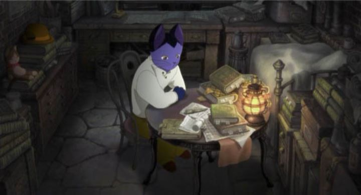

At the time of this writing, I haven't yet found the time to sit down and read through some of Kenji Miyazawa's works, one of the most reverred classical authors of Japanese literature. He is probably best known through the 1985 animated adaptation of his movie "Night on the Galactic Railroad." Despite his importance to the country's identity, there are seldom other mentions of his stories being adapted into film. Of them, I could only find mention of two, each with ties to Studio Ghibli, although those never came around to American audiences in any form. And so fans of "Galactic Railroad" might have looked forward to "The Life of Gusko Budori," and 2012 animated film released in North America by Sentai Filmworks in 2018. This actually isn't the first time the story had been adapted: another anime film of the story was released in 1994, but that version is even harder to find evidence of. This 2012 film happens to carry over the same director of "Galactic Railroad," Gisaburo Sugii, still working hard even 27 years later. Naturally, this means "Gusko Budori" will also depict its characters and anthropomorphic cats of many colors. It's unlikely Sugii will ever get the chance to expand his "Kenji" collection to other stories, but "Gusko Budori" makes a find companion piece the "Galactic Railroad." For the most part, your opinion of one will likely be true for the other."Gusko Budori" starts with Gusko as a child cat living peacefully in a quaint European-inspired town with his family. His father works hard, his mother keeps them well fed, and his loving sister makes the whole world seem bright. But (the ominous narrator says) one year, the cold of the winter didn't go away, leaving the town without food or work, struggling to survive. One by one, the villagers leave in search of an escape to survive the attack from nature. Budori's father leaves in desparation to find something for his family, and soon after his mother goes out to find him. Neither will be seen again. Gusko's sister begins to grow faint as he tries to mash grass into something edible, until one day, a mysterious cat with large eyes and a great cape comes into their home and takes the sister away. With nothing else to keep him, Gusko is forced to leave his home, and find a way to live elsewhere, first as a farmer's assistant in a neighboring town, and next as a... research assistant at a organization that studies volcanoes? That's oddly specific for a film that otherwise seemed timeless and accessible to everyone.Similar to "Galactic Railroad," the story deals with the hardships of life and dealing with death in an abstract way. The viewer will likely recognize that the cat in the cape was a personification of death, but Gusko never admits to himself that his sister has passed away. In between acts of his life, he retreats to a dream world where he chases after the cape demanding his sister back, or in an early random case, learns the futility of man against nature. If there is an overarching theme throughout the film, it is that the best laid plans, be it for survival or profit, are not immune to the whims of mother nature and other factors, and that some harsh realities are simply beyond one's control.  It's very much in line with Miyazawa's writing style, and fits director Sugii's storytelling, choosing to patiently and slowly convey a variety of abstract ideas about the meaning of life and death and nature. However, the writing is generally a bit worse, seeming even more random than expected at times. The movie will cover most of Budori's life in a way that made me wonder if it was based on the life of a real person (originally, the film's Japanese title used the phrase "The Biography of"), which typically makes for awkward storytelling in film. But there is a wider array of characters this time around, most of which are humourous and memorable caricatures that made me smile. Their presence makes the film more entertaining to sit through, even if it is a bit longer than it really ought to be.Overall, the production is a bit better than "Galactic Railroad" purely due to it being more modern. The visuals aren't quite as inspired as a whole, but some of the background shots are beautifully detailed enough to make one pause. During the dream sequenes, the animation will sometimes switch over to 3D CGI, stop-motion or puppetry; this doesn't really happen often enough to help define the movie, but it was a nice idea that provides variety. The music has some nice moments, including a sweet ending theme, but isn't quite as memorable. The English voice acting is sometimes bad enough to make me wince, but the variety of characters helps make it acceptable to listen to.I feel the reputation of 2012's "The Life of Gusko Budori" isn't particularly strong. I understand its' pacing and writing won't work for everyone, but in many ways I found it much more watchable than "Night on the Galactic Railroad." I don't think of "Gusko Budori" as much of a mandatory classic, but the two films pair very nicely together, and I do think both are worth watching at least once.
- "Ani" More reviews can be found at : https://2danicritic.github.io/ Previous review: review_The_Legend_of_the_Millennium_Dragon Next review: review_The_Lord_of_the_Rings